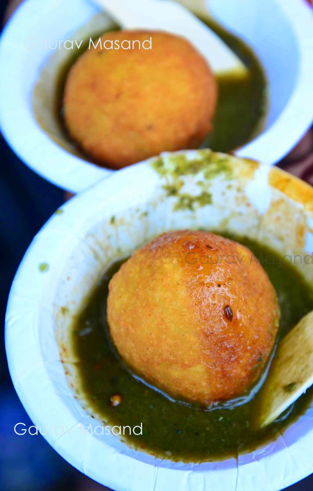
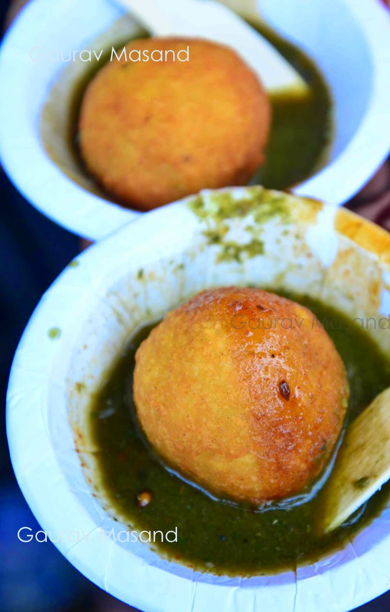

Another Indori specialty is the Khopra Patties. This well known dish consists of deep-fried potato balls stuffed with coconut. Fried right before your eyes, just when they are ordered, they are served with a tangy sweet tamarind chutney. Vijay Chat House is where you should try these along with their crisp samosas and popular kachoris. The patties and kachoris here are usually sold out by 10pm, so add this one to the list of eateries to visit earlier in the evening.